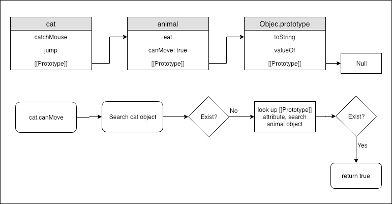

### Object Recap * object literal ``` var empty_object = {}; var stooge = { firstName: 'Jerome', "last-name": "Howard", address: { address1: '1 Howard St', city: 'New York' } }; ``` * created by new operator ``` function Person(firstName, lastName){ this.firstName = firstName; this.lastName = lastName } var mickey = new Person('Mickey', 'Green') ```
#### Retrieval * stooge['last-name'] * stooge.firstName * stooge.address.city
#### Update * stooge['last-name'] = 'Page' * stooge.firstName = 'George' *we will revisit object in future classes*
### Objects are passed by reference ``` var cat = { name: 'cat' }; var kattie = cat; kattie.name = 'kattie'; console.log(cat.name); // 'kattie' var a = {}, b = {}, c = {}; // a, b, and c each refer to a // different empty object a = b = c = {}; // a, b, and c all refer to // the same empty object ```
``` var params = { x: 5, y: 10, z: 20 }; function foo(args) { args.z = 0 } foo(params); console.log(params.z); // 0 ```
### Property Descriptors * Object.getOwnPropertyDescriptor ``` var a = { b: 'javascript' }; Object.getOwnPropertyDescriptor(a, 'b'); //configurable: true //enumerable: true //value: "javascript" //writable: true ```
### Property Descriptors * writable: decides whether the value associated with the property can be changed or not, default: true. * configurable: decides whether we can change the property descriptor or not.default: true. * enumerable: decides whether the property is enumerable or not. default: true.
#### Object.defineProperty() ``` var o = {}; Object.defineProperty(o, 'a', { value: 1, writable: false, configurable: true, enumerable: true }); o.a = 2; console.log(o.a); // output 1 ```
#### getter and setter ``` var obj = {}; var name = ''; Object.defineProperty(obj, 'name', { get() { return name; }, set(nValue){ name = nValue; console.log('name is given a new value: ' + nValue) } }); ``` [Object.defineProperty() | MDN](https://developer.mozilla.org/en-US/docs/Web/JavaScript/Reference/Global_Objects/Object/defineProperty)
### What is `this` * `this` indicates call-site object ``` var jerry = { name: 'Jerry', sayYourName: function(){ console.log(this); console.log('My Name Is ' + this.name) } }; jerry.sayYourName(); // 'My Name Is Jerry' ```
* `this` indicates global object, in browser, it's window object. ``` var sayYourName = jerry.sayYourName; sayYourName(); ```
* `this` bind to an explicit object provided to `call` or `apply`. ``` var tom = { name: 'Tom' }; jerry.sayYourName.call(tom); // 'My Name Is Tom' ``` [call | MDN](https://developer.mozilla.org/en-US/docs/Web/JavaScript/Reference/Global_Objects/Function/call) VS [apply | MDN](https://developer.mozilla.org/en-US/docs/Web/JavaScript/Reference/Global_Objects/Function/apply)
#### Not As Expected? ``` var duck = { name: 'Donald', delaySayYourName: function(){ setTimeout(function(){ console.log(this); console.log('My Name Is ' + this.name); }, 3000) } }; duck.delaySayYourName(); ``` **oops, `this` is gloabal object!!!**
#### ways to fix - 1 * refer `this` with another name (we use `that`) in the scope ``` var duck = { name: 'Donald', delaySayYourName: function(){ var that = this; setTimeout(function(){ console.log(that); console.log('My Name Is ' + that.name); }, 3000) } }; duck.delaySayYourName(); // My Name Is Donald ```
#### ways to fix - 2 * use `bind` ``` var duck = { name: 'Donald', delaySayYourName: function(){ setTimeout(function(){ console.log(this); console.log('My Name Is ' + this.name); }.bind(this), 3000) } }; duck.delaySayYourName(); // My Name Is Donald ``` [bind | MDN](https://developer.mozilla.org/en-US/docs/Web/JavaScript/Reference/Global_Objects/Function/bind)
* `this` binds to the newly created object when new operator is applied ``` function People(firstName, lastName){ this.firstName = firstName; this.lastName = lastName; } People.prototype.printName = function(){ var str = 'First Name: ' + this.firstName + ' , Last Name: ' + this.lastName; console.log(str); } var jerry = new People('Jerry', 'Mouse'); console.log(jerry.printName()); // 'Jerry' ```
#### `this` binding summary 1. `this` binds to global object. e.g. function calls 2. `this` binds to the call-site object. e.g. method calls 3. `this` binds to the object provided as the first argument of `call`, `apply` and `bind`. 4. `this` binds to the newly created object when `new` operator is applied.
### Prototype * Prototype chain * Object.create function * the `new` operator and "constructor"
### Prototype Chain * Objects in javascript have an internal attribute called [[Prototype]] * By default, this internal attribute point to Object.prototype. * When an attribute is accessed or a method is called, if it doesn't exist on the caller object, it will look up through the prototype chain. * the end of the prototype chain is Object.prototype
#### access property diagram 
#### pseudo code demostration ``` var animal = { eat: function(){}, canMove: true }; //by default animal.[[Prototype]] = Object.prototype var cat = { catchMouse: function(){}, jump: function(){ console.log('I can Jump!'); }, favoriteFood: 'Fish' }; cat.[[Prototype]] = animal // explicit link cat's [[Prototype]] to animal ```
#### `__proto__` object * Imagine the internal attribute [[Prototype]] is accessible through `__ proto __` attribute ``` cat.__proto__ = animal; console.log(cat.canMove); // prints out true var kattie = { name: 'Kattie', location: 'Disney Land' }; kattie.__proto__ = cat; console.log(kattie.favoriteFood); // prints out 'fish' kattie.jump(); // prints out 'I can Jump!' console.log(kattie.canMove); // prints out true ``` _ `__proto__` help better understand prototype, but don't rely on it. Better to not use it at all._
#### update property * updated properties are assigned to the object, not to the prototype ``` kattie.favoriteFood = 'cookie'; console.log(kattie.favoriteFood); console.log(cat.favoriteFood); ```
### How to build [[Prototype]] link in Javascript? `Object.create` method ! The Object.create() method creates a new object, using an existing object as the prototype of the newly created object. [Object.create | MDN](https://developer.mozilla.org/en-US/docs/Web/JavaScript/Reference/Global_Objects/Object/create)
#### example 1 ``` var animal = { eat: function(){}, canMove: true }; var cat = Object.create(animal); cat.favoriteFood = 'Fish'; var kattie = Object.create(cat); kattie.name = 'Kattie'; kattie.location = 'Disney Land'; ```
#### example 2 - `this` is binded ``` var prototypeObj = { fullName: function(){ return this.firstName + ' ' + this.lastName; } }; var interestingPerson = Object.create(prototypeObj); interestingPerson.firstName = 'Yong'; interestingPerson.lastName = 'Zhao'; interestingPerson.fullName(); // return 'Yong Zhao' ```
### The `new` operator The new keyword does the following things: 1. Creates a blank, plain JavaScript object; 2. Sets the [[Prototype]] property of the newly created object to the function's prototype object; 3. Passes the newly created object from Step 1 as the this context; 4. Returns the newly created object if the function doesn't return its own object.
``` function Person(firstName, lastName){ this.firstName = firstName; this.lastName = lastName; } Person.prototype.fullName = function(){ return this.firstName + ' ' + this.lastName; } var interestingPerson = new Person('Yong', 'Zhao'); interestingPerson.fullName(); // returns 'Yong Zhao' ```
#### emulate _class_ and _instance_ * javascript actually don't have class concept * like the `Person` function, when called with `new` operator, it acts like an constructor. * as an emulation, we can put initialization logic inside the `Person` function, and define methods on `Person.prototype`, so that the methods looks just like instance methods * If we define methods on `Person` directly, it looks just like class methods.
#### emulate _class inheritance_ ``` function Animal(category){ this.category = category } Animal.prototype.categoryDesc = function(){ console.log('This animal belongs to ' + this.category + ' category'); } function Cat(location){ Animal.call(this, 'Cat'); this.location = location; } Cat.prototype = Object.create(Animal.prototype) Cat.prototype.locationDesc = function(){ console.log('This cat is in ' + this.location); } var tom = new Cat('Disney Land'); tom.categoryDesc(); tom.locationDesc(); ```
### [[Prototype]] vs `__proto__` vs 'Function.prototype' * [[Prototype]] is an internal attribute of javascript object. It's specified by EMACScript. It's abstract and may be implemented differently by javascript compiler.
### [[Prototype]] vs `__proto__` vs 'Function.prototype' * `__proto__` is once an implementation of [[Prototype]]. Set this attribute really set the [[Prototype]] of the object. (It's not recommended, don't rely on that, it may be removed any time)
### [[Prototype]] vs `__proto__` vs 'Function.prototype' * only function has a prototype attribute, when the function is called with `new` operator, the newly created object's [[Prototype]] is linked to the function's prototype attribute.